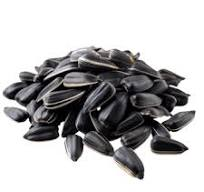
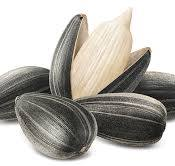
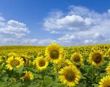

В данной работе рассматривается семя подсолнечника (Helianthus annuus) как ключевой объект сельскохозяйственной и пищевой промышленности. Проведен анализ морфологической структуры, химического состава и агротехнических условий возделывания. Особое внимание уделено липидному профилю и содержанию антиоксидантов, обеспечивающих высокую питательную ценность продукта. Выявлена корреляция между плотностью посадки и масличностью семян.
Подсолнечник однолетний (Helianthus annuus) является одной из важнейших масличных культур глобального значения. Семя представляет собой сложную биологическую систему, содержащую запас питательных веществ, необходимых для развития проростка. С точки зрения агрономии, семя — это генеративный орган, обладающий высокой энергетической ценностью.
Семя (правильно — семянка) состоит из кожуры (перикарпия) и зародыша, основную массу которого составляют семядоли. Перикарпий защищает внутренние структуры от механических повреждений и патогенной микрофлоры. Цвет кожуры варьируется от черного до полосатого, что является сортовым признаком.

Энергетическая ценность семян подсолнечника обусловлена высоким содержанием липидов. Средние значения химического состава представлены в таблице 1.
| Компонент | Содержание (%) | Функция |
|---|---|---|
| Жиры (липиды) | 45–55 | Энергетический резерв |
| Белки | 20–25 | Пластический материал |
| Углеводы | 10–15 | Структурные элементы |
| Клетчатка | 10–12 | Регуляция перистальтики |

Для получения высококачественного урожая необходимо соблюдать температурный режим (оптимально 20–25°C) и уровень влажности почвы. Глубина заделки семян не должна превышать 6–8 см. Важным фактором является севооборот: не рекомендуется высевать подсолнечник на одном и том же поле чаще, чем раз в 6–7 лет из-за риска накопления патогенов.

Семя подсолнечника представляет собой уникальный объект для изучения как с точки зрения биологии, так и с точки зрения экономики. Дальнейшие исследования должны быть направлены на повышение устойчивости сортов к климатическим изменениям и оптимизацию методов переработки.
Сноски: